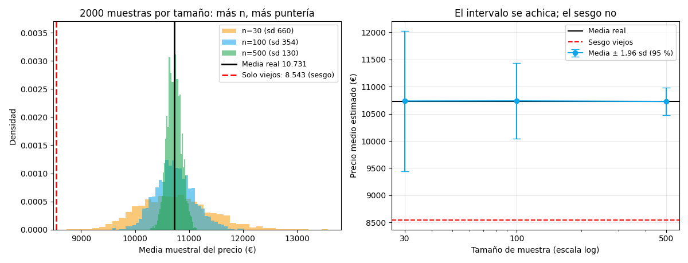

Anexo · Contenido extra · Lección 0038
Muestreo y sesgo: por qué 30 autos al azar valen más que 725 elegidos mal
Win de hoy: con 2.000 muestras simuladas: n=30 da medias entre 9.553 y 12.106 (mucho ruido), n=500 entre 10.477 y 10.989 (puntería)… y 725 autos «solo viejos» dan 8.543: precisos, pero precisamente mal.
1 · Población, muestra y la pregunta de toda la materia
La población son los 1.436 autos (media real: 10.731 €). Una muestra es el puñado que miramos. Toda la materia vive de una pregunta: ¿qué nos dice el puñado sobre el montón? Dos enemigos: el ruido (la muestra baila) y el sesgo (la muestra apunta siempre al lado equivocado).
2 · Más n, menos baile (pero el sesgo no se achica)
Simulamos 2.000 muestras aleatorias de cada tamaño y miramos dónde caen sus medias:

Doble moraleja: (1) cuadruplicar n achica el ruido a la mitad (sd 660 → 354 → 130): la precisión se compra con muestra. (2) Ningún n arregla el sesgo: 725 viejos dan 8.543 con total «precisión»… 2.188 € abajo de la verdad. Por eso cómo elegís importa más que cuántos juntás.
Regenerar la figura (mismo resultado versionado en assets/img/toyota/):
python scripts/make_figures.py --only muestreo-sesgo3 · Tres sesgos con nombre y apellido (en nuestro dataset)
| Sesgo | Ejemplo Toyota | Media que obtendrías |
|---|---|---|
| De selección | Medir solo autos viejos (Age > 60) | 8.543 € (−2.188 €) |
| De selección | Medir solo Diesel (155 autos) | 11.295 € (+564 €) |
| De supervivencia | Faltan los autos ya desguazados (los peores viejos no están) | La media «real» ya viene optimista |
El tercero es el más tramposo: ni siquiera la «población» del CSV es la población real de Toyotas.
Todo análisis hereda los sesgos de cómo se juntaron los datos — documentarlos es parte del trabajo
(como hicimos con KM=1 y los ? en Bloque C).
4 · Simulación en 10 líneas (reproducí la Fig. 1)
import pandas as pd, numpy as np
df = pd.read_csv("../ToyotaCorolla.csv")
p = df["Price"].values
print("real:", round(p.mean(), 1)) # 10730.8
rng = np.random.default_rng(42)
for n in [30, 100, 500]:
ms = [rng.choice(p, n, replace=False).mean() for _ in range(2000)]
lo, hi = np.percentile(ms, [2.5, 97.5])
print(f"n={n}: sd={np.std(ms):.0f} intervalo=({lo:.0f}, {hi:.0f})")
viejos = df.loc[df["Age_08_04"]>60, "Price"]
print("solo viejos:", round(viejos.mean(), 1)) # 8542.9Tu turno: cambiá la semilla (default_rng(7)) y verificá que los intervalos apenas se mueven:
el ruido muestral es estable; el sesgo, testarudo.
5 · Quiz (auto-chequeo inmediato)
6 · Fuente primaria y cierre
Para profundizar (1 fuente): Diez, Barr & Çetinkaya-Rundel, OpenIntro Statistics — cap. 1 (muestreo y sesgos). Más contexto en RESOURCES.
Cierre: con muestreo honesto, todo lo anterior (EDA, modelos, torneo) generaliza; sin él, es aritmética sobre arena. Siguiente: 0039 · Soporte e itemsets (Bloque G).